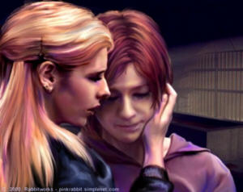

"THE DART GUN!!" Buffy Summers screamed as she tried desperately to hold onto the creature hell bent on killing them all. "GET THE DART GUN!!" Her arms were wrapped around the thing's corded neck, one leg hooked around its midsection, while her other leg was locked around one of the metal bars behind her that had held the beast safely locked away until only moments before. Xander Harris leapt after the weapon as it went skittering across the dusty floor of the crypt, scrambling to move as fast as possible and still evade the slashing teeth and claws of the slavering creature bent on eating him at the first possible opportunity. Giles lay several paces away, badly winded and bleeding from a cut to his forehead where he'd collided with a sharp edge of marble after being hurled across the room by the escaped creature, and before losing his grip on the gun Xander was trying so desperately to retrieve. Just another fun full moon in Sunnydale California, home of the Hellmouth, where vampires, demons, and werewolves go to party. Her nose pressed into the russet pelt of the werewolf, Buffy grunted as supernaturally strong muscles knotted with the effort to hold it back from her friends. "HURRY!!" she howled over the creature's roars, all too aware that the leg tangled in the bars was threatening to give way. "I CAN'T HOLD ON MUCH LONGER!" A huge clawed hand swatted the air between Xander and the gun, forcing him to yank his arm back to avoid losing it. And then, apparently sensing that only Buffy's continued hold was keeping it from its prey, the wolf changed tactics, rearing backwards to slam the Slayer into the bars at her back. Buffy heard her own cry of agony as she was hammered between unbending metal and inhuman muscle, but somehow held on, gripping fur and muscle more tightly than she would have sworn was possible. The thing lunged forward and reared back again, and Buffy couldn't help but wonder if that popping noise she heard was the sound of her own bones shattering under the impact. She held on tightly, face buried in fur, intensely aware of the flex and play of powerful muscles under her desperately clutching hands. A roar rang across the night as the thing expressed its rage. And then she felt the thing slump and a beat later, she hit the floor, one leg still tangled with the bars, the other unsteadily braced on the dusty stone tiles, the werewolf a sudden deadweight in her arms. The Slayer's chin lifted, her eyes meeting Xander's dark gaze just as he slowly lowered the dart gun, his face hazy behind the smoke drifting up from the barrel of the weapon. The creature's backwards momentum into the Slayer had given him the chance he needed to get his hands on the rifle. "Buffy?" the teen gasped uncertainly. "I'm all right," she assured him, though every muscle in her body was throbbing from the pounding the creature had delivered. She untangled her leg from the bars, felt her knee threaten to give way, and balanced herself on her other leg as she tried to decide what to do next.. "Mostly." Despite the pain, she tightened her hold on the creature in her arms, her gentle handling at odds with the fight that had raged only seconds before. Holding his ribs tightly, Giles pushed to unsteady feet. "Are you certain?" he demanded as he straightened his glasses and peered at her intently. "If there's even a small wound...." He trailed off suggestively. They all knew quite well what even a small injury could do. He didn't need to remind them. After all, it was a small child's playful nip that had reduced one of their number to the mindlessly raging creature hanging limp in Buffy's arms. "Nothing," the Slayer assured him. "Well, no blood drawn anyway...though I'd pay money to have a whole new set of bones at the moment." She carefully settled her foot on the floor, trying to decide whether to trust the knee or not. "I'm not sure the knee bone's still connected to the thigh bone." Finally, she concluded it wasn't going to fold under her--though it hurt like hell--and put her weight on the badly torqued joint as she hefted the unconscious werewolf over one shoulder and hauled it back inside the cage. "I...uh...we can use the manacles to secure the cage for the rest of the night," Giles stammered as he eyed the broken lock on the crypt cage door. "And then worry about something more permanent tomorrow." Buffy settled the creature on the floor as gently as she could, then backed up a pace, peering down at the raw bulk of fur and muscle that had, until a few hours before, been a friend. She sighed softly, wondering if she'd ever get used to the transformation. She glanced back, noting the stripped lock. The metal was torn and shredded. The creature had been in an unusual furor tonight, one that had nearly led to disaster for everyone. Still limping, she slowly turned and exited the cage, tugging the bars into place, then helping Xander wrap the chains on the manacles around the bars to secure the door, before locking it all together. When they were finished, she turned her gaze to Giles, where he still leaned against a sarcophagus, a handkerchief pressed to the bloody wound on his forehead. "That should be treated," she pointed out with a nod. Giles lifted a brow, then winced as it pulled on the gash. "Yes, I'd rather gathered as much," he allowed dryly. Now that things had calmed down, his innate British demeanor was back in play. "Xander, get him to an emergency room," Buffy instructed, sounding tired. She leaned against a freestanding sarcophagus, slowly stretching her aching muscles. "Are you sure?" her friend question. "I mean if that door doesn't hold...." Buffy retrieved the weapon from where he'd laid it, cradling it in one arm as she calmly checked to make sure there was a second dart in the chamber. "It will," she assured him without looking up. "I won't let it get to the point where it's about to give way." Her words held an implied chastening that Xander couldn't miss and he flushed. "I just thought...you know...that all the growling was business as usual," he said defensively. A pale brow lifted as the Slayer eyed her friend. Inside the cage, the beast let out a sleepy, woofling growl. "Yeah, I suppose that's understandable," she sighed as she looked back at it with sad eyes. The creature was always in a frenzy of some kind, but it seemed as though it was getting more intense each time, which worried the Slayer. What if it just kept getting worse? Containing the beast was already hard enough. They'd have a real problem on their hands if it got much more intense. "Just be more careful next time, okay?" "Oh, yeah...hey, that's me, Mister Careful Guy," Xander insisted with forced cheer. Buffy and Giles both looked at him with lifted brows. "Right," Giles sounded doubtful as he continued daubing at the blood sliding down his face in crimson ribbons. "And now, you need to be Mister Get Giles to the Doctor Guy," Buffy reminded Xander with a pointed look at Giles. "It can wait--" Giles started to argue, but Buffy cut him off. "No, it can't," she disagreed, noting the way the injury was still bleeding. "The last thing we need is to have you dropping dead from blood loss." "Buffy--" her former Watcher was still intent on arguing, but once again she cut him off impatiently. "Go!" Giles wavered on his feet and Xander caught his elbow, steadying him as he questioned, "Do you want me to stop by the library and--" "No," Buffy inserted before he'd finished, then continued in a quieter voice. "There's no need to interrupt the research binge. Besides, I promised Willow I'd make sure everything was okay." She ran a hand through her disarrayed hair, resettling it to some semblance of order. "It'll be all right," she reassured Xander. After a few more limp arguments, Giles finally allowed himself to be helped back to his car. Buffy stepped out into the chill night air, watching protectively as her friend's made their way through the cemetery in search of the Watcher's aging Citroen. When she heard the sound of the engine chugging away into the night, she tipped her head up, focusing on the moon hanging brightly in the sky overhead. A thin halo of high cirrus clouds gleamed around the shining globe, diffusing the textures, and making the man in moon appear to laugh and wink at her. It was ironic that something so beautiful could bring so much havoc to the world far below. "And the wolf jumped over the moon," the Slayer sighed tiredly, then turned to go back inside and take her place in silent vigil. The full moon still hung poised in the sky, warring with the rising sun and its warm light as night gave way to day. Inside the crypt that doubled as an otherworldly prison, Buffy Summers slowly moved closer to the bars barricading the beast from the world. She'd rehung the blankets used to offer some measure of privacy to the human occupant soon to reappear, but she could see what was happening cast on the blankets like some strange shadow play and hear the creak and grown of bone and muscle changing shape. She felt the fine hairs at the nape of her neck stand on end as the awful sounds filled the air, making her want to curl up in a ball and press her hands to her ears in denial. She'd sat on this strange vigil more than once, but it never failed to horrify her and she suspected it never would. Finally, long, agonizing minutes later, the transformation was over, leaving the now human occupant of the cage lying sprawled on the cold marble floor, limp in the unnatural sleep that always seemed to follow the change. Silently, the Slayer crept closer, wrapping her hands around cool steel bars to support herself, when she realized how hard she was trembling. Thank God, Giles and Xander weren't there to see the brave Slayer reduced to quaking in horror. It wouldn't have made for a confidence building moment. Careful not to make any noise, she leaned to one side to peer around the makeshift barricade, taking in the figure lying limp in the dust, pale limbs splayed in an uncomfortable looking position, red hair tousled and askew. A fine-boned hand lay near the bars and Buffy caught sight of a tiny twitch that told her consciousness was returning. "Will?" she whispered after a beat. Green eyes blinked muzzily open. "Buffy?" Willow Rosenberg groaned weakly as she slowly pushed up on one hand. She ran her fingers through her hair, shaking off some of the dust. A headache was pulsing just behind her eyes, reminding her of the hangover from hell...literally. "You okay?" the Slayer questioned gently, her voice little more than a whisper. Willow nodded slowly, trying to ignore the still unfamiliar embarrassment of waking up naked in a strange place with people looking on and no real memory of what might have passed while she was a beast. Buffy leaned back so her friend wouldn't know she'd looked around the edge of the blankets. "It's okay," she assured Willow. "Giles and Xander are both gone." She picked up the neatly piled stack of Willow's clothes and handed them through the bars without looking, then sat, quietly listening to the soft rustling of fabric as her friend prepared to rejoin the proper mortal world. She was still sitting there like that when she heard Willow's soft gasp. "Oh, God," the hacker groaned. "The door...the lock's broken...." Buffy pushed to her feet in an instant, wincing as her knee and ribs both reminded her of the brutal pounding she'd taken the night before. "I got out," Willow whispered in a voice thick with terror. Buffy fumbled with the keys to the padlocked manacles, rattling the chains in her urgency to unlock them. "It's okay, Will," she tried to reassure her friend. "You didn't hurt anyone." But Willow saw the way Buffy was limping and her brows drew together in a panicked frown. "I hurt you," she gasped and backed up a step. "No," Buffy insisted as she finally tore the chains away and yanked the door open. "I'm okay. A little bruised. That's all." She caught Willow's cold hands in her own, not letting the hacker escape. Green eyes searched the Slayer's pale gaze, then slid down, moving over her battered frame, hunting for any sign of a bloodletting. "It's okay," Buffy assured her. "Really...you didn't hurt anyone." "Sometimes I'm so scared that...." Willow couldn't even finish the thought. "I know," Buffy sighed and tugged the hacker into a hard hug, offering what little comfort she could. They'd been going through this monthly routine for four months now, and Buffy could see the toll it was taking. She wished she could just hold Willow and protect her from the harsh reality of what had happened, but not even the Slayer could undo what had been done. She petted silky crimson hair, stroking tenderly, gently stroking delicate strands back from Willow's temple. "We'll find a way to undo this," she whispered near her friend's ear. "I don't know how, but we will." Willow pulled back just far enough to peer into Buffy's eyes, losing herself in their limitless depths. "Do you really believe that?" The Slayer lifted a hand to stroke Willow's cheek lightly. Her mouth worked soundlessly for brief moment, but she couldn't quite force the lie out. "I don't know," she admitted at last. "But we'll get through...somehow we'll get through it together." The two girls stared at one another for a long moment. "When you say it, I almost believe it," Willow breathed at last. "Hey," Buffy whispered with an encouraging, if watery smile. "Slayer knows best." Willow looked down, suddenly realizing that her palms were resting on Buffy's upper chest. She could smell the soft perfume of her friend's body, sense the heat pouring off of her, see the flickering reflections of the room in her eyes, hear the quick pattern of her breathing. As much as she hated the curse that had been laid on her shoulders, she had to admit that it had altered her view of the world; made her more aware of scents, sounds, almost everything. Even her nerve endings seemed to be more sensitive, making her intensely aware of the texture of Buffy's sweater and heat of her skin through the thick knit. She could feel the wolf inside of her, or maybe it was just a part of herself she'd never before admitted to, a hidden Willow that she'd always carefully kept locked away from the real world. Whatever it was, it was becoming steadily more aware of the Slayer, and of the desires she'd hidden from herself since first meeting Buffy. She could feel her heart thudding powerfully in her chest, the blood moving in her veins, taste the faint musk of a woman's body-- "Will?" Buffy's voice was uncertain, drawing the hacker's gaze up until their eyes met again. The Slayer tensed, startled by the heavy lidded look in her friend's eyes, and felt her pulse accelerate. And then, suddenly, Willow blinked and it was gone. She was the Willow Buffy knew and... The Slayer backed off from that thought, wondering at her own sanity at the things that were suddenly running through her head. Willow was her friend. Her very female friend. They were just friends. "Friends," she repeated, only realizing she'd spoken aloud when Willow looked at her oddly. "I...uh...I mean...we're friends...We'll be there for each other," she added quietly. "For each other," Willow echoed. Again, they both fell silent, both aware of each other in a way that was somehow both comforting and uncomfortable at the same time. Willow lifted a hand to brush a few strands of blond hair off the Slayer's forehead, instinctively leaning closer, lips parting ever so slightly. Her hands slid up, spreading against the Slayer's upper chest. "We're more than friends, Buffy," she whispered. It wasn't just the wolf that wanted to be with the Slayer--it was the girl as well. "A lot more, I think." Caught by intelligent green eyes just as surely as a rabbit caught in sharp canines, the Slayer couldn't move. She nodded slowly. "A lot more," she admitted to herself as much as to her friend as she leaned toward her. They were going to kiss, fully intended to explore the sweet caress they both wanted, and were about to touch lips when the sound of footsteps on the stairs leading into the crypt brought both their heads up and around. "Hey there," Xander said cheerfully as he bounded into the room. "It's your fave guys come to take you out to breakfast for some post werewolf caloric recharge." Oz entered a couple of paces behind the taller boy, his expression bland in the extreme. "Hi." Willow winced at the reminder, then flashed a glance at her ex-boyfriend. Somewhere along the way, Xander had decided it was his job to get them back together--she supposed he still felt guilty for their previous breakup--and he wasn't giving up no matter how many times she begged him to. "Xander," Buffy growled and glared at him for his insensitivity. He never noticed. "I don't think so," Willow demurred and yawned to emphasize her refusal. "I'm dead tired. I really need to get some sleep." Xander's shoulders slumped as he realized he'd failed yet again, while Oz simply stood there, hands thrust in his pockets, hair and clothes rumpled from his night in the library. "I found a few things last night that might help," Willow's ex murmured, so deadpan that anyone who didn't know him would never have guessed at the depth of his guilt for what had happened to his former girlfriend. After all, it was his cousin that had bit her, and she'd been babysitting in his place so he could make a gig. "I can drop them off after rehearsal this afternoon." "Thanks," Willow said softly. She turned a look toward Buffy, suddenly intensely uncertain about what had nearly happened. She didn't know whether she was the one who'd wanted the Slayer, or whether it was the wolf, with its need to conquer, that had burned for her. "I...I need to get some sleep," she repeated unsteadily, suddenly desperate to get out of this place and into the sunlight. "I'll walk you back to the dorm," Buffy inserted instantly and reached for Willow's arm, but the hacker waved her off. Willow just wanted to be alone. "No...you should get those books to Giles." Willow felt her friend's confusion, could even smell it, and it just made her want to be away from her--all of them actually--even more. It was pure sensory overload and she needed to escape its cause for a little while to regain her equilibrium. "Maybe he can find something." She danced back a nervous step. "I...I really need to get back now." "Will, are you sure?" Buffy questioned worriedly, tamping down the hurt Willow's unexpected rejection had caused. "I'm sure Xander can take the books over now." She caught Willow's hands in her own, pulling her up short. "I'm not sure you should be alone right now." "Sure, no problem. Give me books to carry and I shall carry," Xander assured them until Buffy flashed a glare his way to shut him up. "Xander, shut up," Oz said softly, his eyes firmly fixed on his ex-girlfriend and the Slayer. Xander snapped his mouth shut, startled by the uncharacteristically firm words from the guitarist. With eyes only for Buffy, Willow stiffly shook her head. "I need to be alone for a little while," she said raggedly. She carefully pulled her hands free. "I'm sorry," she added as she backed away toward the door. "I just...I can't think straight right now." And then she hurried out, leaving her friends behind her. "Is it just me, or is she a little on edge these days?" Xander murmured thoughtfully. Buffy turned an annoyed gaze his way. "Hmmm, three days a month she turns into a giant, hairy, killing thing. Think maybe that bothers her?" Oz didn't say a thing. Xander backed up a step. "I didn't mean anything...I mean, I just meant--" He stumbled over his words, once again regretting his tendency to speak first and think later. "Just don't," Buffy cut him off and held out a hand to Oz. "I'm headed Giles' way anyway." The guitarist handed Buffy the backpack that had been hooked over one shoulder without comment. "Thanks," the Slayer clipped as she slung the pack on. She looked back over her shoulder, nodding toward the cage door where it hung somewhat precariously, the manacles that had temporarily been used to lock it shut hanging through the bars. "We had a bit of an accident last night--" Oz nodded. "Xander told me." "Think you could arrange to get that fixed?" She just wanted to get the books to Giles and see how he was feeling. She didn't have time to worry about everything. Xander nodded. "There's a guy that did some bodywork on my van. He's cool. I can get him to do the welding." "Thanks," Buffy muttered, her mind already somewhere else. "I'll see you two later," she added as she hurried out. "Well, that was certainly less than the fun bonding time I was hoping for," Xander complained unhappily. "Xander, shut up," Oz repeated his earlier remark, his tone flat. Xander looked down at the guitarist. "I'd think you'd be nicer about it all, since it's your social life I'm trying to fix." "No," Oz disagreed mildly. "It's your conscience...and it's not helping." Xander was still exhaling "Oh," when Oz hurried out. Buffy stared at Giles as he continued reading through the bookmarked pages in the latest book from the stack she'd delivered for Oz. The gash on his forehead had been cleaned in the emergency room, the edges of the wound neatly butterfly taped backed together, then a large bandage slapped over the top. His face was bruised and he looked like hell, but, like her, he was doing what he had to. "Anything?" she prompted. Giles sighed heavily as he looked up, his expression annoyed. "No...just like there wasn't anything the last time you asked...two minutes ago." "Sorry," the teen apologized, then wrapped her arms around her folded legs, resting her chin on her upthrust knees. "I'm just worried." Giles' sigh was softer this time. "I know," he admitted. " You're not the only one, you know. Willow's very important to all of us." "I know," Buffy exhaled. "It's just that...it's like it's getting worse each time...I'm afraid for her, Giles...what if it means that...that somehow she's losing herself...that the wolf's taking over?" "Buffy," her Watcher began carefully, "whatever's happening, we'll find a way to help her." The Slayer exhaled heavily and reached for the top book on the stack that Giles had discarded and flipped it open in hopes of perhaps finding something he'd overlooked. "I may have something here," Giles said a little over an hour later. Buffy bounced up from the couch, tossing her own book aside in her eagerness to see what he'd found. "What is it?" She peered over his shoulder at the densely printed page. Giles frowned as he studied the passages in question. "Well, according to this, there is one thing that can send werewolves into an unusually violent frenzy..." he explained haltingly, rereading even as he spoke. "What?" Buffy demanded impatiently, trying to read over his shoulder without much luck. An eyebrow climbed high on the Watcher's forehead. "Well...to put it bluntly..." He paused, then took a deep breath as though nerving himself up for something. "Frustration." "Okay, that makes sense," Buffy agreed. "The werewolf doesn't like being locked in a cage...that's definitely frustrating for it--" "Not that sort of frustration," Giles interrupted her. Buffy blinked, not understanding what he was trying to tell her. "I don't...what do you mean?" Giles pointed to a paragraph as he held the book up so she could see. The Slayer leaned forward, silently reading what he was pointing at and then her brows lifted. "Oh," she exhaled. "It does explain why it's gotten steadily worse since she broke up with Oz," Giles noted, trying to keep his voice cool, disinterested and completely professional. He mostly even managed to keep the nausea out of his tone. There were some things he would have preferred not to know. "I am assuming they were intimate." Buffy nodded slowly. "They were intimate," she confirmed, her mind whirling. "So, what do we do?" Giles lowered the book back to the table and began thumbing through it again. "I'm not really certain. Apparently the sexual frustration plays havoc with the beast's hormone's--particularly the adrenaline levels--and it sends it into a violent rage...I mean, more violent than normal." "So, I guess that means she should get back together with Oz?" Buffy whispered past the sudden tightness in her throat, startled by how much the idea hurt. "Not necessarily..." Giles disagreed. "According to this..." he trailed off as he continued reading. "It has to be someone who puts the beast at peace...reaches the person inside...since Willow and Oz broke up...perhaps he's not..." He dragged a hand through his hair in frustration. "Damn books...half science and half wives' tales." He snapped it shut. "The only thing it's quite clear about is that the rage will just keep getting worse...and it will start to spill into her everyday life." "The wolf," Buffy breathed, remembering the look she'd glimpsed in her friend's eyes that morning. "Sometimes I see it in her eyes." Giles nodded. "Yes," he exhaled. Buffy turned away, grabbing for her jacket, her expression distant. "Buffy, what are you--" "To talk to Oz," she clipped as she hurried out. "They broke up because of this thing. He may be the only one who can reach her." "Buffy, I'm not certain..." Giles started to argue, but she was already gone."That that will help," he finished out of habit, then sighed softly and continued reading. Willow Rosenberg was dreaming, her breath coming in quick pants, her skin damp with sweat. She twisted in her sheets, until they were wrapped around her legs and torso like a the manacles that they sometimes used to bind the beast that lived inside her body. As she tossed and turned, tiny sounds vibrated up from her chest, while her dream-self pursued its prey. She was moving swiftly, her body graceful, controlled, and incredibly powerful. Her prey's scent teased her nostrils; sweet, sensual, warm, making the dream-beast-Willow hungry to make the catch. She saw a flash of blond hair ahead of her and increased her speed. And then suddenly, they broke through the thick undergrowth into a grassy clearing. Overhead, the full moon gleamed brightly, casting sharp white light down onto the world below and throwing the entire scene into sharp relief. She saw Buffy spin as if to fight even as she lunged at her. Willow was suddenly aware of how much taller and bulkier she was than the Slayer. She slammed the blond's small frame to the earth, overwhelming her supernatural strength with ease. She gripped the tiny woman in massive, russet-haired arms, rippling muscles flexing to contain her struggles. "Willow, please..." Buffy gasped, her body arching and writhing in an effort to escape. Their gazes locked and held, and suddenly beast-Willow was the captured instead of the captor. And then it was human hands that held the Slayer, and her struggles were no longer an effort to escape, but rather to increase the contact. She arched up against Willow, writhing wildly, dragging her head down to share a devastatingly erotic kiss. The Slayer rolled her lover beneath her, hands sliding over her skin, stroking gently and drawing low groans of arousal in response. Willow could only surrender to the sweet sensations, offering herself up to their shared passion. "Fool," the Slayer whispered near her prey's ear, and she reared back, producing a silver stake, that she hefted over her head, intent on destroying the beast. She never had a chance. The beast-Willow was on her in a heartbeat, claws digging into her skin, hot fetid breath burning her face, rough fur abrading her flesh. The chased silver stake gleamed in the moonlight as a clawed hand wrapped around the Slayer's hand, cracking bones against each other until she released the weapon it clattered across the floor. The beast let out a chuffling laugh. And then it tore the Slayer's throat out. "No!" Willow gasped as she sat straight up in bed, eyes dilated, heart hammering in her chest. She struggled violently with the sheets--panicked by the remembered horror of the dream--until she scrambled free of the cloth prison and tumbled free. She hit the floor with a jaw rattling thump, then lay winded for a long moment, the feel of cheap carpeting scratchy and rough against her cheek, her hair a crimson curtain across her face. "God," the teen gasped, her voice shaking almost as hard as the rest of her. She clawed at the carpet, wanting to banish the awful nightmare along with the thick arousal still moving through her veins. "No," she whispered raggedly over and over as need gave way to sick horror. "I don't want that." She only wanted to make it all go away, the nightmares, the bloodlust, and mostly the harsh reality of what she now was. Finally, as the dream receded, she climbed back into bed, but this time she didn't sleep, simply lay on top of the blankets, staring silently at the ceiling, helpless tears running back from her eyes into her hair. Buffy found Oz at the crypt where they kept Willow locked away, supervising the repairs to the cage. His friend was welding the door back together and installing a fresh lock when she entered, and did little more than wave one hand and mutter a laconic, "Hi," when Oz introduced them. Buffy couldn't help but wonder if the two were related. "Could we talk?" the Slayer said simply. Oz nodded. "Mike can do the rest." He nodded toward the entrance. "Outside." They found a pair of headstones that made decent seats and sat facing each other. Buffy launched straight into her story, half afraid that if she didn't just get the words out, she never would. Oz just stared at her through the entire recitation, his expression so utterly expressionless that it was a little like talking to a wall. When she finished, Buffy waited for Oz to respond, but he only continued to look at her. Finally, an eyebrow lifted ever so slightly, letting her know that he was still breathing. "You really don't see it," Oz said at last. "See what?" the Slayer demanded. She just wanted this over and done, so she could stop thinking about Oz and Willow, stop envisioning them touching as he tamed the savage beast that lived inside her by making love to her. For reasons she didn't even want to think about, the thought just hurt too much. A mental image of the near kiss she'd shared with Willow flashed in her brain, taunting with her own desires when she was in the process of handing over any possible future they might have to the only lover the hacker had ever known. Oz shook his head. "It's not me," he said softly, his tone as nonchalant as his posture, though his knuckles were white where they rested on the marble headstone. "I can't help." Buffy dragged a hand through her hair in ragged frustration. "Dammit, Oz--" But he shook his head insistently. "I mean it, Buffy, I can't help." And then, as if he'd read her mind, he added. "And neither can Xander." He continued staring at her, his gaze steady and unyielding, until Buffy finally looked away. A long moment of silence followed, then Oz sighed softly. "We didn't break up because of the wolf. Or because of Xander. It was just us." Buffy clenched her hands at her sides, wishing she had an enemy she could fight. It would have been so much simpler if she could have just kicked the crap out of someone or something and made it all better. "It wasn't right and we both knew it." He swallowed hard and something flickered deep in his eyes, though it disappeared quickly, hidden behind the bland mask he showed the world. "Look inside yourself for the answer," he told her after a long moment, then pushed off his impromptu seat, landing lightly. "I should go make sure Mike's doing a good job," he murmured, leaving Buffy staring after him in bemused silence. "God, I hate it when he goes all Yoda like that," the Slayer muttered at last, fervently wishing that someone would just give her a straight answer sometime. Between Giles and his books on magic, the occasional ambiguously prophetic dream, and now Oz's monosyllabic advice, it was a wonder she knew anything at all.
Another sunset, another full moon, another night of being tall, dark, and hairy. Willow was safely locked inside her newly repaired cage, sitting with her back to the wall, legs folded up against her naked chest, chin resting on her knees. Buffy had thoughtfully rehung the blankets to maximize her privacy, then chased the guys out when Xander couldn't seem to resist the urge to peek. She could hear her friend telling them to go home. They were just outside the crypt, but she could hear their voices as clearly as if they were standing a few feet away. She could also smell the sweet tinge of the Slayer's perfume--jasmine tonight--mixed with the less pleasant odor of Xander's cologne--Brut, apparently no one had gotten it through his skull that women didn't find it appealing--and Giles' soap of choice--something expensive with just a hint of sandalwood. It was starting. Her senses were tuning up for the coming show. Buffy reentered, her eyes wide as they met Willow's tired gaze. The wolf saw the fear in the Slayer's look through Willow's eyes and pricked its ears, listening for the overstressed thud of her heartbeat. The dream. Willow remembered it without wanting to, remembered the taste of the Slayer's blood filling her mouth-- No! I love Buffy, she reminded herself as she wrapped her arms tightly around her legs, holding on as if she could somehow make it all go away. "I love her," she whispered out loud, trying to force the nightmare out of existence through sheer force of will. And then the change began in earnest, the pain coming in wave upon wave as her body twisted and morphed into something else entirely. The last human words she uttered and the last human thoughts she had were simply, "I love her." The wolf was in a mood again, hurtling itself at the bars and the walls with supernatural ferocity, shredding anything it could reach with its talonlike claws. Wisely, the Slayer made certain she was not within that deadly arc, instead remaining back several yards, seated on a sarcophagus where she could watch the thing that had been her friend. The strange thing about the werewolf was that it was perversely beautiful, the muscles long and corded, standing out in sharp relief under its shaggy fur coat, it's heavy head proud, the eyes dark and fathomless. Buffy wondered at her own sanity as she noted the train of her thoughts. As the night passed, the beast seemed to tire of its rage, quieting somewhat, its intense dark eyes focused on the Slayer at all times as it slowed and began moving about the cage, testing and pressing on each possible weakness. Buffy reached out, checking the position of the loaded dart gun where it sat near her hip. Apparently there was still enough of Willow in the creature to make it logical and far more clever than the average bear. That made it dangerous. And maybe it also made it reachable. The Slayer canted her head to one side, watching the werewolf work its way around the cage. "Will," she spoke very softly, not expecting any response. She was surprised when an ear quirked her way, silently acknowledging the softly spoken name. Buffy frowned ever so slightly, easing off her impromptu seat to move closer. "Will, can you hear me?" The ear shifted, tracking Buffy's slow movements like a radar dish tracking a satellite. The werewolf's eyes were dark, but there were a few flakes of green in them, a flicker of Willow's color, Buffy realized when the creature looked up and their eyes met. The Slayer's breath caught, her heart suddenly pounding out a rhumba beat in her chest. Willow was in there. She could feel her. "I know you're there," she whispered as she drew another step closer to the cage. The werewolf watched her progress with narrowed eyes, its body tense, but unmoving. "I know you're scared...and you're angry..." Buffy's voice caught. "I feel like I should have protected you from this," she admitted, her voice rough. "I dunno, maybe you do too...maybe that's why you're so angry..." Buffy knew that wasn't true even as she said the words. Willow had never blamed her--never blamed any of them--for what had happened to her. The beast continued watching her. Buffy could sense that it was hunting her, but there was something else there as well. Something that made her shiver with awareness. "I just wish I could make it all better...wave a magic wand and make it go away." She drew another step closer until that she was standing just outside of the creature's reach. "I love you, Will," she whispered. And the thing lunged, hurtling at the bars with enough force to dent them, startling the Slayer so badly she tripped over her own feet and hit the floor on her backside. It roared, screaming its rage as clawed hands swiped at the air mere inches from her splayed legs. The Slayer pressed backwards with her hands, momentarily panicked before she regained control. She straightened with effort, forcing the terror down as she pushed to her feet. "I do love you, Willow," she repeated, carefully pronouncing her friend's name in hopes that whatever remained of Willow would hear. The softly spoken words set the creature off on a fresh round of fury, but oddly enough, the Slayer saw it as a good sign. It couldn't be a coincidence that the avowals of love seemed to upset the thing. So Buffy did the only thing she could think of. She kept telling Willow she loved her, talking about their friendship, unburdening her heart to the creature, slowly digging deeper into her own emotions until she was saying the things that she'd never even let herself think before. The thing roared, beat on the walls and the bars, tore at the bolts holding the bars in the wall, lost itself in rage and fury. And through it all, Buffy just kept talking, though she kept a careful eye on the condition of the cage. Alone against the werewolf, she couldn't risk having it get loose. With morning drawing nearer, it finally seemed to beat out its rage, calming enough to simply stand at the center of the cage as it listened to the Slayer pour out her heart, the words tumbling from soft lips in unbidden sentences. In those hours, Buffy admitted everything, to Willow...and to herself. And then at some point, they went past words, leaving Slayer and werewolf staring at each other in silent fascination. Buffy lifted a hand, holding it out, fingers spread as if braced against an invisible wall that separated them. She was startled a beat later as the creature lifted its own paw in imitation of her gesture. "I love you," she exhaled, amazed by the thick rush of emotion that flared through her chest. Suddenly, she understood what Oz had been trying to tell her. "I really do love you," she repeated in a tone of awed wonder as she saw her own feelings laid out before her. Not just friendship or sisterly love, but romantic, passionate, jealous, I-want-to-hold-you-close-and-never-let-go-love. "My, what a sweet little scene," a knowing voice drawled from the doorway. The Slayer pivoted neatly, dropping into a fighting stance as she faced the newcomers. Vampires. Two punks she'd chased two nights before, only to have them escape into the sewer. As the scent of their clothes reached her nostrils, she was amazed she hadn't smelled them coming. The werewolf looked up, lips drawing back from vicious fangs as it let out a deep, hate-filled growl. "Yeah," the second vampire, a one time teenager with blue hair and a ring through his nose. "Looks like the Slayer's gotta major case of puppy love." The two laughed at their "witty" joke. "Great," Buffy muttered. "Whose brilliant idea was it to vamp Beavis and Butthead?" "Huh huh," the blue-haired one did a fair Butthead impression--though Buffy suspected it was more a byproduct of profound stupidity, than an intentional lifestyle choice--then he reached into a jacket pocket and yanked out a revolver, pointing it at her. "Betcha didn't expect this, huh?" he crowed victoriously when Buffy flashed a surprised look at the weapon. "Even a Slayer dies when bullets are involved." "Yeah," his pal confirmed. "Man, you'd think a few other vamps woulda thought of using a gun, but no. Buncha ass-backwards, losers are stuck in the fourteenth century. Right, my man?" The vamps turned to each other to share a high five, and Buffy launched herself into action, delivering a roundhouse kick that sent the pistol flying. "Hey!" the blue-haired one complained as if she'd somehow cheated, then lunged. Buffy blocked his attack with a roundhouse kick that knocked him back several feet, then spun to deliver several hard blows to his pal to keep him busy. She couldn't afford to have either of them get a long enough break to go after the lost revolver. Lunge. Feint. Kick. Block. Punch. The pattern went on. Normally, she would have taken these two with ease, but she was still sore and tired from the previous night and her reactions were slow. It didn't help any that the stench surrounding them had made breathing an unusual challenge. The vampires were doing better against her than their sort should have been able to do against the Slayer. The fight had set the werewolf into a fresh frenzy and it hurtled itself into the bars over and over, rattling the bolts that held them in place. Suddenly, Buffy's foot hit a thick patch of dust and she momentarily pinwheeled in an effort to regain her balance. It didn't work and she went down hard, scrambling for her feet even as one of the vampires lunged after the lost pistol and the other one got his hands on the forgotten tranquilizer gun to slam the butt end into her temple. Pain screamed through her skull, but she didn't go down again, instead blocking a second blow as she tried to push back to her feet. With her head down and involved in the fight, she didn't realize how close to freedom the werewolf was until the bolts tore out of the wall with a squawling sound. The vampires turned just as the wall of bars started to come loose. It was still braced upright by the rough stone of the walls, but the werewolf's massive paws were sure to change that state in mere moments. "Holy shit," the blue-haired one exhaled. His buddy was the one with the gun, but it hung useless at his side as he stared at the beast in slack- jawed disbelief. "They don't eat us, do they?" he questioned nervously. "Nah, man, we're already dead. How nutritional can we be?" Buffy used the brief respite to climb to an unsteady half-crouch. The ground threatened to tip beneath her feet, and she felt like she'd been run over by a Mack truck, but she was still alive and she had every intention of staying that way. She was still trying to decide what to do next when the wall came tumbling down, the bars clattering and clanging as they hit the stone floor and stirred up decades worth of crypt dust. "Oh, fuck," the blue haired one got out as the wolf attacked. Buffy dove out of the way as werewolf and vampire went tumbling, rolling with the momentum of her leap until she hit the far wall. Using the cool stone as a brace she pushed upright in time to see the werewolf rend the blue-haired vampire into bits, literally flinging body parts aside in its fury. The Slayer's eyes widened, her chin lifting as an arm arced toward her, only to explode into a bitter dust cloud only a few inches before making contact. One vampire down. One to go. Finished with its first prey--and unsatiated by the dust that filled the air--the werewolf turned gleaming eyes toward the other stoner-vamp. "Oh, shit...you killed Kenny!" he exploded as he stumbled backwards, lifting the pistol and firing convulsively. "WILL!!" Buffy screamed helplessly as she saw the beast spasm with each hit. The bullets drew bright spots of blood on dark brown fur, and further enraged the creature, but they didn't slow it down. The werewolf lunged, fangs glinting brightly even in the faint light. The Slayer watched in horrified silence as the scene continued to unfold out of her control. The werewolf crashed into the second vampire, instantly digging in with teeth and claws. The fight didn't last long. And then the beast lost a second meal in a cloud of useless, eye-stinging dust. "Oh, shit," Buffy breathed as she saw the thing start to rise, very certain that in a moment, it would be aimed for her. She had calmed it before, but it had been behind bars then, and exhausted from hours of raging. Now the hunting instinct was in total control and she was under no illusions that the creature would spare her because its human self was her best friend. Not when it was this hungry and this furious. The dart gun was too far away for her to get to in time, and if the werewolf turned and lunged at her with the full force of its ferocity, she wouldn't have a chance. As banged up as she was, the werewolf would tear her to bits. And even if she did get lucky and survive, it would mean killing Willow. So the Slayer did the only thing she could think of that might get both of them through the night and launched herself straight at the creature's broad back. It was like impacting hair-covered, moving cement carved in the shape of a werewolf. the Slayer's grunt of pain mixed with the creature's howl and rage at being attacked. Buffy's fingers dug into long, bloody fur as she clung long enough to get an arm around the beast's broad neck, despite its efforts to fling her off. Outside the crypt, the world was at peace in a blue, predawn glow. Inside, sheer havoc reigned. Desperate to get the Slayer off its back, the werewolf, tried to reach back and grab her, but jointed more like a wolf than a human, it couldn't reach her. For long moments, the thing spun, howling impotently as it flung its human flea this way and that. Despite the insane ride, Buffy managed to get both arms around the massive column of the thing's neck, and hooked a leg around its heavy midsection. Outside, the sun was close to rising. As battered as she was, she only had one real chance at survival; hold on long enough for the transformation to begin and the creature to weaken. And then it hammered backwards into a wall and Buffy almost let go. Her cry of agony echoed the creature's cry of rage, but she somehow managed to tighten her hold, pressing her forearms into its throat hard enough to cut off some air. They tumbled, rolled, and slammed into the walls together, until, finally, the creature began to stagger. Weakened, it stumbled to the center of the room, wavering on its feet. Whether from the rising sun, the lack of oxygen or the combination of the two, some of the ferocity drained away, and it stopped trying to knock Buffy off. "It'll be okay, Will," Buffy panted near a hairy ear. The creature grunted softly, and the ear twitched in response to her voice. Its chest was streaked with dark blood, but the injuries were already almost completely closed. The Slayer pressed her face into rough fur, suddenly aware of the tears streaking her face, and the werewolf blood dotting her hands and arms, and soaking into her sleeves. "Come back to me, Will..." she groaned. "Please, God. Remember I love you." The thing staggered, letting out a low whining cry as it toppled to its knees. Ropey muscles quivered beneath rough hair and flesh. No longer trying to shake off its human tormentor, it seemed to have forgotten her entirely. "It'll be okay," Buffy whispered again, as much to reassure herself as the creature. The beast whimpered now, weaving back and forth. Outside, the first rays of sunrise fell across the earth. Buffy clung tightly to the creature as she heard and felt the change start. Bones shifted and moved under her tight grip, the sounds echoing off the walls in horrifying stereo. Together, the two figures toppled to the floor, still twined together in imitation of a lover's embrace. The Slayer hid her face in the faint indentation at the center of her friend's back, eyes tightly shut, her soft whispers echoing off changing flesh. "I love you, Will. I love you." Long minutes passed as the torturous change rippled through the young woman held tightly in the Slayer's grip. The soft chink of lead hitting cement echoed through the room as the bullets that had torn through the werewolf fell away from newly humanized flesh, leaving faint, half-healed scars in their wake. Buffy blinked slowly, lifting her head as she became aware that the hair and skin pressed against her cheek had transformed from rough and scratchy to the smooth textures of silk and velvet. Human once again, Willow lay limp in the circle of the Slayer's arms, naked, her pale skin streaked with the dark blood of her other self. Buffy carefully slid her hands over her friend's bare torso, hunting for and not finding any open wounds left by the bullets that now lay around them on the ground. "Thank God," Buffy exhaled, then allowed herself to relax, letting her head fall until it was nestled in the curve of Willow's shoulder. A couple of days with no sleep had pushed even her stamina to the limit, and the beatings she'd received two nights in a row weren't helping in the least. So she snuggled up against Willow, too tired to care that a dusty floor was their makeshift bed, content to simply hold the woman she--Buffy paused, took a deep breath, then completed the thought--the woman she loved. They were still lying like that long minutes later, when Willow stirred sleepily. The hacker blinked in momentary confusion before the details of her surroundings began to sink in, then tipped her chin down, noting the arms wrapped tightly around her torso. "Buffy?" she mumbled weakly. "It's okay," the Slayer exhaled near Willow's ear. "But...what hap--" And then Willow saw the blood streaking her skin. "Oh, God," she gasped. "I hurt you...oh, God--" "No," Buffy insisted as she heard the horror in Willow's voice. Without planning to, she tightened her hold, automatically containing the hacker's instinctive struggles. "I'm okay, I'm okay," she whispered sharply to break through the panic. "It's not my blood. It's yours." Willow froze in Buffy's arms. "Mine?" she repeated. "I don't...nothing hurts," she exhaled. "The bullets weren't silver," Buffy whispered. "Which means, I guess, that we can count at least one bit of arcane trivia as fact-ish." She turned her face into Willow's hair, momentarily reassuring herself that she was okay. Almost instantly, the redhead's struggles lessened, though her muscles remained tense. "Do you remember...anything?" the Slayer whispered after a long beat. Willow shivered, lying perfectly still in Buffy's arms as she tried to summon the hazy images floating through her subconscious. It was like a particularly distant and violent dream, except her id grew hair and fangs and tried to eat people three days a month. She closed her eyes, trying to find her way through the confusing morass. "You were talking to me," she breathed at last. "I was angry...but you kept talking...kept telling me...something..." Buffy felt her chest clench, uncertain whether to be disappointed that Willow didn't remember what she'd said, or relieved. "Yeah," she confirmed without getting specific and then quietly told Willow what had happened with the stoner-vamps and the wolf's precipitous escape. "You saved my life," she whispered at last. "I mean, the wolf did...but I think it knew...well, at least until I leaped on its back so it couldn't decide to eat me...it was kind of a wild ride then...but just until the sun rose..." she trailed off into silence, not knowing what else to say. "Which is why you're lying on the floor...with me...naked?" Willow croaked after a beat. "Kinda...yeah..." Buffy didn't add how right it felt, even if they were lying on a cold, dusty floor. Seconds passed as Willow digested everything Buffy had told her and tried to fit it into what little she did remember. And then a then a single moment sharpened into aching clarity, the garbled soundtrack clarifying to let her hear a small snippet of softly spoken words. "You said you love me," she exhaled after a long beat, her voice dropping low with disbelief. Another second or two of silence ticked by. "Buffy?" The Slayer couldn't think to speak, didn't know what to say. Her brain just went completely blank. "Will," she said at last, unconsciously smoothing her thumb against the curve of Willow's shoulder where her hand rested. "I...I was just trying to reach you...y'know...in there...make sure you know..." She swallowed hard. "How important you are...to me...to all of the Scooby gang," she added as an afterthought. "Buffy?" Willow turned her head enough to look up into the Slayer's face where her cheek rested against her shoulder. The Slayer swallowed hard and didn't look away despite the temptation. "I love you too." Willow's voice was so tiny it was almost inaudible, but Buffy had no problem hearing her. "Um...Buffy..." Giles cleared his throat, blinking against the faint light inside the crypt. Both girls looked up, eyes widening as they saw the Englishman standing in the entrance, his posture uncomfortably stiff. "Giles," the Slayer exhaled, wondering just how much he'd heard. Of course, neither she nor Willow had said anything that couldn't be read in the most innocent light. Actually, if she was honest with herself, she wasn't sure that any of it should be read in anything but the most innocent light. Willow had said, 'I love you too,' but that could just as easily mean 'I love you like a sister,' as 'I love you, I want you, get naked with me.' Buffy wasn't even entirely sure how she meant the 'I love you.' Well, yes, actually, she was sure how she meant the 'I love you.' She just wasn't sure how she felt about being sure how she meant the 'I love you.' God, life was confusing some days. Her Watcher looked at the downed cage bars, then back at the two girls. "What happened?" he asked at last. After carefully releasing her hold on the hacker, Buffy pushed into a sitting position. "Those two vamps I missed last night showed up with a gun...kind of amazing they're the first two ever to think of using one, because they were dumb as a sack of hammers." Giles moved the cage bars, crouching down to tug loose one of the blankets that had been used to shield Willow's modesty, then tossed it toward the two girls. Buffy pushed to one knee with a wince, caught the blanket thrown her way, then slipped the rough fabric around Willow's shoulders as she helped her to sit up, eyes lingering momentarily on her bare torso: just long enough to glimpse the six silvery scars that hadn't been there the night before. The bullet wounds had healed, but not without leaving their mark. "The werewolf got out, did them in, and then, we kinda had a little dance...and then the sun rose. End of story." The Watcher slowly rose, pivoting to stare at his young charge, his face several shades paler. "It escaped...and you fought?" "It was more of a hold on and pray thing, but there was a bit of an altercation," Buffy allowed. "Buffy, this is no time for levity!" Giles snapped impatiently as he hurried to them. "Were you bit or scratched? If the werewolf even--" "No," the Slayer shot back. "Battered around a bit, but that's it." She felt Willow shiver against her side, and slid an arm across her shoulders, giving her a comforting hug. It couldn't be easy for her to hear that she had hurt anyone in any way. "We're okay," she added defiantly, willing Giles to see how he was hurting Willow. The former librarian's eyes dropped to the young woman leaning against Buffy, her head down, her slender body trembling as though the words were blows. His eyes lifted to meet the Slayer's blazing gaze, then slid over her narrow frame, hunting for any sign of blood or injury. When their eyes met again, he searched her face, suddenly wondering about the quiet declaration he'd heard while entering. His initial instinct was to simply chalk it up to an expression of their friendship, but looking into the Slayer's eyes, and seeing the possessive way she held on to her friend, he suddenly found himself wondering about that. He was still trying to decide whether or not to say anything when a fresh set of footsteps on the stairs brought all of their heads up and around. "Hey, I come bringing don...uts..." Xander Harris skidded to a halt as he saw the condition of the crypt. His eyes found the trio where they were clustered together in the center of the room. "Looks like a bad night," the teen exhaled after a beat. "Major understatement," Buffy murmured, then looked down at Willow, pointedly ignoring the other two as she questioned, "Think you can stand?" The hacker nodded, leaning against Buffy as they both rose. Giles hovered, reaching out to steady the two girls when they both looked to be on the verge of collapsing again. Xander dropped the box of donuts and hurried forward to steady his friends as well. He glanced over at the collapsed cage bars. "You guys okay?" he questioned. "Fine, great, wonderful," Buffy groaned, flinching as her body reminded her of the pounding she'd taken. Willow wrapped the dusty blanket more firmly around herself. "Very naked," she added on a groan, suddenly aware of a slight twinge across her chest and stomach, like old scars pulling, as she moved. Xander's brows lifted in an automatic leer. "I noticed that." Used to Xander's sense of humor, Willow just rolled her eyes. Xander glanced back at the now ruined werewolf cage. "So, what are we gonna do with the Willow-wolf tonight?" The other three followed the line of his gaze. "We'll...ah...think of something..." Giles murmured at last. "Hopefully something a little stronger than the last something," Xander observed dryly. "Hopefully," Willow agreed, then allowed herself to be led out and back into the sunlight, content to simply not worry about it for a little while. Buffy looked up from her bed as Willow entered their shared dorm room, swathed in her terrycloth robe, her hair damp from the shower, smelling fresh and sweet. "Feel better?" she questioned without moving. She lay sprawled in her own robe, her hair freshly dried, the bruises from the wolfy encounter already starting to fade. Clean and with a fresh nap under her belt, she was feeling surprisingly good. Despite everything, they'd gotten through the night with no harm, no foul. The hacker nodded slowly. "Yeah...hate the smell of crypt-dust in my hair," she babbled, trying not to notice the graceful length of Buffy's legs, or the heady smell of her soap. And definitely trying not to remember near-kisses and avowals of love that maybe weren't really meant the way she wanted them to be meant. Buffy pushed upright, watching Willow silently. "How're the bullet wounds?" she questioned worriedly. They had no way of knowing if there were any serious consequences to being hurt while she was a werewolf. Reminded of the injuries, Willow pressed a self-conscious hand to her chest, brushing lightly against the front of her robe over the spots where the bullets had hit the werewolf. "They kinda tingle...not hurt exactly...just...I dunno, I can't explain. There are scars, but even those are fading." She shook her head slowly, plainly amazed by the whole thing. Buffy let out a soft whistle. "And I thought that Slayer-healing thing was impressive," she murmured. Willow sank down on the edge of her bed. "I'm just grateful I didn't hurt you," she exhaled, still bothered by the damage she could have done. Wisely, the Slayer made no mention of her bumps and bruises. "I don't think I could live with that," Willow added in a low voice as she stared down at her linked fingers. Just the thought of hurting Buffy made her stomach clench with raw nausea, until she just wanted to find a hole, crawl in and never come out. Sometimes, she was so ashamed of thing that lived in her, of the changes she could feel seeping through her very soul that she just wanted to run away and never come back. A part of her suspected it would be safest for all of them. Sensing the wall that came up between them, Buffy bounded off the bed, moving to kneel on the floor in front of Willow. "I'm okay," she assured her friend and reached up to brush a few strands of wet hair back from her cheek. "You didn't hurt me." She dropped her hand to cover Willow's where they rested in her lap. "Not even the wolf did." Willow swallowed hard, trying to force down the threat of tears without great success. Unable to force any words past the tightness in her throat, she just shook her head back and forth. Buffy could feel her own heart hammering in her chest. "You were in there, Will. You saved me." Green eyes lifted to meet Buffy's gaze. "I love you," Willow whispered simply, the words spilling out before she could call them back. Her eyes dropped, but not before Buffy caught a glimpse of the emotion that lived there. It nearly knocked the Slayer off her feet. "Will," Buffy croaked and reached out to cover Willow's hands with her own. "I think maybe we need to talk," she breathed after a long beat. "No," Willow burst out almost instantly. "I mean, it's okay. You don't have to say anything...I know...I mean...I know you don't feel the same way...that you just meant you love me like a friend earlier...I know that...I just...I guess I wanted you to know--" "Shhh," Buffy hushed her gently and reached up to lay a finger over rose kissed lips. "It's okay." She stroked her fingers back from Willow's lips along her cheek, then outlined the curve of her jaw as she slid up onto the bed next to her friend, sitting close enough to feel the heat of her body, even through the double thickness of their robes. Without conscious planning, she trailed her fingers down the slender arch of the hacker's throat, then slipped them under the edge of her robe, well aware of how her friend tensed when she slowly pressed the fabric back until Willow's left shoulder was bare. Buffy brushed her thumb over smooth skin, pausing as she found the faint imperfection right at the center of the joint. The tiny silvery scar was barely visible, but she could feel the knot of still healing flesh and knew there would be others to match it hidden farther under her friend's robe. "God," the Slayer exhaled heavily, barely able to force down the hard shudder that rattled her narrow frame. The whole night had seemed painfully unreal, but suddenly it was even more painfully real. She slid her fingers down along the veed edge of the robe, slowly parting it to reveal more of the valley between gently rounded breasts until she saw a second faint scar, this time on the upper curve of her right breast. Buffy knew all to well where to hit to strike cleanly. Another half an inch and the shot would have hit Willow square in the heart, and God only knew if even a werewolf could survive a wound that severe. "You could have been killed," she whispered at last. Willow swallowed hard, trying to wet her suddenly sandy-dry mouth to speak, but totally at a loss as to what to say when the only thing she could think of was the gentle fingers resting against her chest right over her heart. Okay, so maybe that whole near-kiss, "I love you," stuff hadn't been quite as meaningless and platonic as she'd feared. She caught Buffy's hand in her own, holding it tight to her chest until the Slayer had to feel the solid beat of her heart. This wasn't the wolf, just Willow. "I'd rather that than ever hurt you," she whispered intensely. Buffy paled, understanding too well what Willow was saying, what she was giving her permission to do if the need should ever arise. "No," she growled. "Don't say that." She pulled her hand free, lifting it to cup Willow's face in her palm, sliding her fingers back into silky hair. "It won't come to that...I won't let it." "You're the Slayer. It--" "No," Buffy cut her off, blinking back the threat of tears. "No." They were facing each other now and she lifted her other hand, so she was framing Willow's face. "We'll get through." All of Giles' information about werewolves and their hormonal needs was forgotten. It wasn't about doing the right thing, or taming any beast. It was just about loving each other and accepting that love no matter how frightening the prospect might be. "I love you," she breathed. And then they were kissing--though neither one would ever remember who had moved first--and losing themselves in the innocence of sharing that first simple intimacy. First kisses led to second kisses, and the sweetness of first caresses, broken only by soft words of affection and low groans. And when their lips parted, it was to no more than a hand's breadth, so close that their breath warmed the space between them. Foreheads just touching, they shared the moment, content to simply savor the closeness. And when they lay down together, bodies stretched out and twined together, they both knew it was only the first time of many.
The wolf was stomping and growling, hammering at its newest environs, a modified titanium shark cage that Oz had gotten by trading his van to a washed up diver who'd surfaced too fast one too many times. He'd done all the modifications himself, reinforcing it to make sure it would hold his ex-girlfriend's alternate form, installing an electronic lock, then setting the bars on the bottom into a newly poured concrete floor in Giles' basement. Then he'd quietly left town, hoping that some of one of the historic libraries or supernatural societies in Europe might be able to help find a cure for Willow. Buffy suspected he'd also left town because it hurt too much to stand by the wayside and watch the love that had blossomed between herself and her best friend. They had tried to spare him, but there was no way to hide that intensity of emotion, not when they sought each other out at the slightest provocation, touching and holding hands with an automatic naturalness that they could no more cease than they could stop breathing. Anya, with her usual tact, had been the first to notice and made Xander aware of the relationship by seriously asking, "Now that you and Willow are orgasm buddies, have you tried spanking? Xander and I really enjoy it." Xander had nearly imploded on the spot. Torn between jealousy, arousal, shock and embarrassment, he'd simply sat in his usual seat in the Bronze coughing and gagging as though he'd swallowed his tongue until Anya thumped him heartily on the back and asked if something had gone down the wrong way. Buffy suspected the ex-demon was wholly unaware that she'd nearly killed her boyfriend. Later, after Xander had caught his breath and kickstarted his brain, he'd privately confronted Buffy, demanding to know if it was the truth and then quietly threatening to hurt her if she ever did anything to hurt Willow after she'd admitted it was. The Slayer had kindly not pointed out that she could break him into tiny pieces if she was in the mood. After all, it was the thought that counted. They were cool with it now, though Buffy was comfortably certain she didn't want to know anything about Xander's fantasies on the subject. He was a good guy, but he was a guy after all. As for Giles, Buffy was sure he'd noticed, but in his inimitable way was avoiding seeing. After all, he was the one who'd told her how to lessen the werewolf's rage; Oz was gone, and Anya would never let Xander off his leash long enough for him to be a candidate, which left only one player who could have effected the cure. Still, Giles had firmly refused to take notice, though he carefully never put himself in a position where he might have to. She couldn't blame him. After all, he'd already been stuck finding out far more about their previous sexual experiences than he would have preferred. After all that, she had a funny feeling that even if she tried to tell him outright, he'd simply clamp his hands over his ears and hum loudly. "Just as well," the Slayer decided aloud, then looked up from her book. She sat on a mattress on the floor, cross-legged, a stack of school books on the floor nearby next to the ever-present dart gun. "I'm not sure I'm ready for that much openness in my life." Then she straightened, squaring her shoulders. "Homework," Buffy muttered to remind herself that there were some major books to crack. "Humanities waits for no werewolf." She sighed softly, took a sip from the cup of coffee on the floor near the mattress, then began in again, reading quietly, her soft voice filling the room. "O! Swear not by the moon, the inconstant moon. Her voice was lost in a hearty roar of displeasure that brought her head up from the book. Buffy sighed softly, flashing an indulgent smile at the angry werewolf. She was pretty sure the footstamping was mostly boredom. The wolf tended to start chafing at its limited environs by the third night--particularly toward morning--as though it sensed it was about to be locked away from the world for another month. Despite that, they'd seen nothing of the horrifying rages that had marked the early bouts in three months--not since they'd truly become a couple and figured out their own emotions. Though it still fussed and tried to escape, fiddling with the bars when Buffy didn't find ways to distract it, the efforts seemed to primarily be a way to entertain itself. Buffy glanced down at her book once again. "Guess the Shakespeare's just not cutting it, huh?" she mused aloud. "Can't say that I blame you. Romeo and Juliet's not exactly what you'd call a real cheerer-upper...and probably the whole moon motif isn't a crowd pleaser right now, either." She flagged the page and tossed it aside, then reached for another book on the stack. "Okay, if that won't do, there's got to be something in here that will get a nice wolfy smile...or at least less growling." The wolf did a slow pivot, eyeing her like a particularly tasty layer of frosting on a very thick multi-layered cake. Buffy noted the look with a raised brow. "I wish I knew what you're thinking when you look at me like that," she mused aloud. "I mean, when Will gives me the eye like that, I know what's on her mind, but with you...I can never decide if you think I look really tasty, or if you think I look really tasty." The werewolf stared at her for a long moment, then let out a low growl. "And no, I won't let you eat the Slayer just to cheer you up," Buffy chastised and then realized what she'd said and blushed a bright shade of pink. "I...that is--" The wolf roared, threatening to have a lupine temper tantrum. "Not a big one for the art of the double entendre, I see," she muttered, wondering at her own embarrassment when there was no one there but the wolf. And even if Willow was there--sort of--well, it wasn't like the joke wasn't appropriate. The Willow-wolf grabbed the bars, using its massive upper body strength to try and wrench them apart. Much like its human counterpart, it wasn't one to handle boredom well. Thankfully, Willow-person didn't have claws, extra sharp canines, or the strength of ten men, and Willow-wolf didn't have the ability to cast spells, levitate objects, or summon demons, or they would all have been in trouble when things got slow. "Okay, okay," Buffy soothed and grabbed another text from the stack. "How about we try the Coleridge?" She flipped the heavy volume open to a flagged page, clearing her throat before she began to read.
The Slayer's voice dropped low, vibrating gently as she fell into the poetry's vivid meter, rising and falling with the tale of the cursed mariner's life of woe. The comforting warmth of the Slayer's voice seemed to soothe the beast, and it slowly began to calm, watching her with sharp eyes. Occasionally, the creature let out a soft growl, or a low snort, but it settled onto the concrete, heavy haunches drawing up as it sat. "You like that one, huh?" Buffy murmured at some point. The beast let out a soft snuffling grunt that almost seemed like a confirmation while Buffy went back to reading the poetic saga. Morning was almost upon them as she neared the end of the poem. The beast curled onto the cement, quieting as the sun began to rise in the east, and its imprisonment neared the end for another month and it was the Slayer's voice that accompanied it into the unnatural sleep that went with the transformation.
Willow blinked, slowly lifting her head as she instinctively fought to throw off the unnatural daze always left after her transformation. "Sleeping Beauty wakes," Buffy murmured soothingly. The hacker rolled into a sitting position, tipping her head up to peer at Buffy where she crouched on top of the cage, peering down through the trap door--Oz had left the original top entry along, figuring that the wolf was least likely to try that mode of exit--and offered a bleary smile. "Well, I guess that's one thing the werewolf has done for me," she muttered as she scooted out of the way so Buffy could drop the jointed metal ladder used to get in an out of the cage down, watching as it unfolded for her use. "I do come out pretty high on the beauty scale when compared to all that hair and claws." "You're beautiful, Will." The Slayer ignored the ladder to drop into the cage, landing in a crouch next to Willow, the hacker's clothes tucked under one arm. "Compared to anyone." Still crouched, she reached out to stroke her lover's pale cheek. Willow rolled her eyes, though her smile was pleased. "Yeah, right." Despite the dismissive note to her tone, she let Buffy draw her into a languid kiss, relaxing against the Slayer's body as her lover's scent and feel filled still-inhumanly alert senses. The thing was still in her, and it still frightened her sometimes, but it was calmer now, its bloodlust at least partially satiated along with Willow's regular old fashioned lust-lust. Most of the time she wasn't even aware of it. "Then again..." she exhaled when their lips parted. Buffy grinned. "Brat." She dropped another kiss on Willow's lips, then thrust the pile of clothes under her arm into her hands. "However, since Giles is probably getting ready to start his morning tea ritual, and will be down to check on us in a few seconds--" "Clothes are good," the hacker inserted as she grabbed clothes and began yanking them hurriedly. Buffy shrugged. "Not all the time." She grinned and winked, her look making any number of erotic promises. "Careful," Willow drawled, her voice low and sultry. She grinned and growled softly, reaching out to catch a handful of the Slayer's blouse in her grip and tug her lover close. "You don't want to arouse the animal in me." "Wanna make a bet?" Buffy drawled knowingly. The sound of Giles' step on the stairs brought both of their heads up. "Later," Buffy mouthed as she stepped back and smoothed her clothes. And later, they would make love, arousing and taming the animal at the same time, sharing heated caresses and hotter emotions, surrendering to each other in a way that could and would only grow deeper over time.... [ The End ] | |||||||||||||